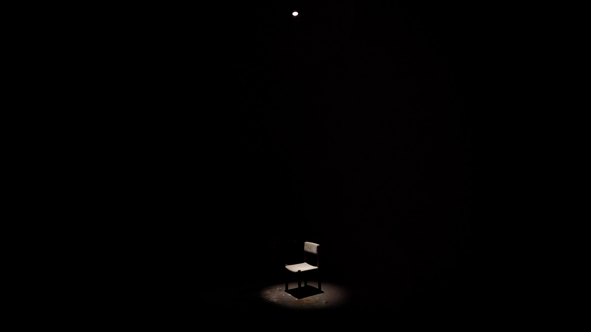
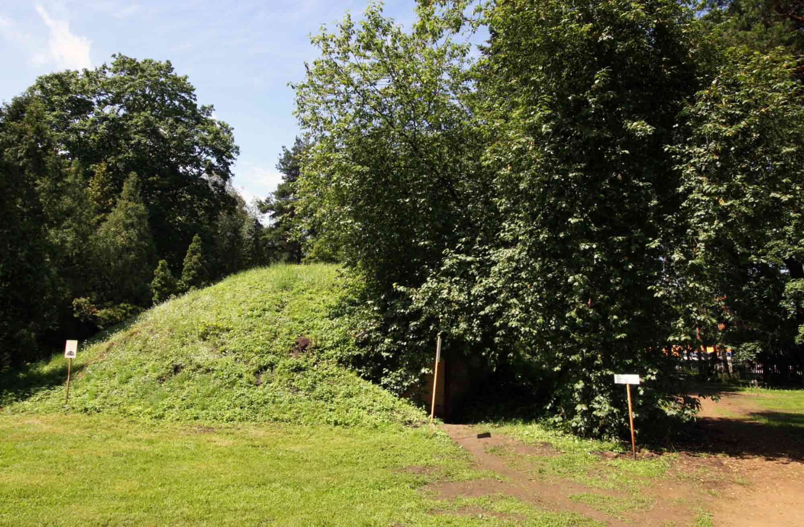
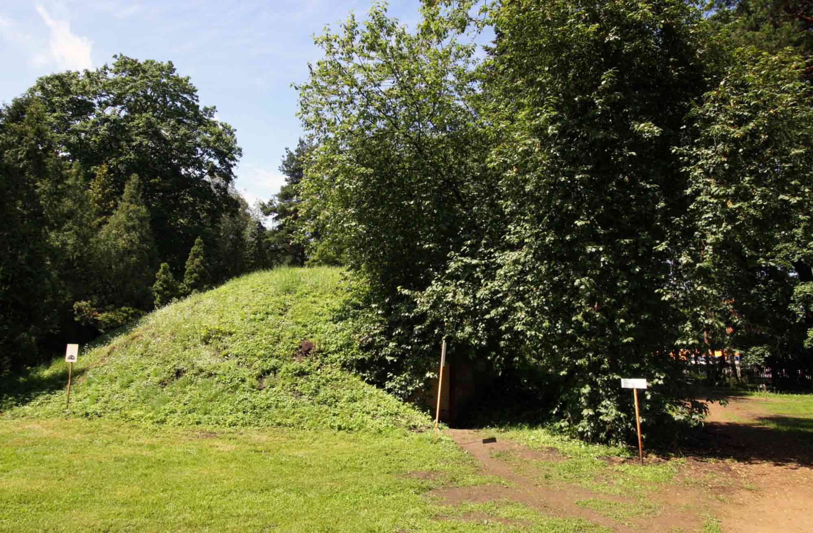

Untitled Sound Installation
SKAN II Sound Art Exhibition, Riga
2014
SKAN II Sound Art Exhibition, Riga
2014
Video sound recorded acoustically in the cellar
The first SKAN Sound Art Exhibition was held in Riga in 2007. The follow-up SKAN II is featuring works by 18
international artists, taking place in various locations in Riga in summer 2014. The main venue is The
Botanical Garden and its attractive half ruined plant covered buildings. Untitled Sound Installation by
Grönlund-Nisunen is situated in an old wine cellar of The Botanical Garden. The red brick dome ceiling has a
little duct in the middle. This aperture casts a weak light circle on the floor. The 6-channel sound system is
hidden in the surrounding darkness.


